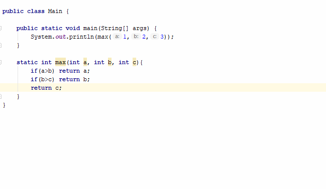
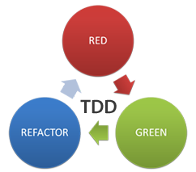

L'objectiu d'aquest CodeLab és utlitzar JUnit per a realitzar proves unitàries.
JUnit és un entorn de treball que permet executar les classes Java de manera controlada, de forma que es pot avaluar si el funcionament de cadascun dels mètodes de la classe es comporta com s'espera. La seva funció és, donat un valor d'entrada, s'analitza el valor de retorn que s'espera, si la classe acompleix amb l'especificació, aleshores JUnit indicarà que el mètode de la classe ha passat la prova; en cas que el valor esperat sigui diferent, JUnit indicarà una fallada en el mètode corresponent.
Les proves unitàries, juntament amb les proves d'integracció, end-to-end, i d'interfície d'usuari, són la base del Test Driven Development. La filosofia és programar abans les proves que el propi codi.

Inicia IntelliJ i crea un nou projecte anomenat "ProvesUnitaries".


Imagina que tenim el següent mètode per a determinar quin és el nombre més gran d'entre tres.
public class Main {
public static void main(String[] args) {
System.out.println(max(1,2,3));
}
static int max(int a, int b, int c){
if(a>b) return a;
if(b>c) return b;
return c;
}
}Segurament hi trobes l'error, però no sempre és fàcil fer-ho i moltes voltes els errors passen desapercebuts. De fet si executem el codi, ens dirà que el nombre més alt és el 3, i ens pot semblar que el codi és, doncs, correcte.
La idea darrere de TDD és programar abans els tests amb diversos casos de prova. En aquest cas podem provar diverses entrades i veure quins valors s'esperen que retorni el mètode max().
max(1,2,3) => 3
max(3,2,1) => 3
max(2,3,1) => 3
max(1,3,3) => 3
...
La biblioteca JUnit ve incorporada amb IntelliJ IDEA, però no s'inclou per defecte al CLASSPATH del projecte o mòdul. En conseqüència, quan es crea una classe de prova, les referències a la classe TestCase o les anotacions de prova no es resolen.
Per afegir la biblioteca necessària al CLASSPATH, es pot utilitzar el procediment general per afegir una dependència a un mòdul.
No obstant, IntelliJ IDEA pot afegir automàticament la biblioteca JUnit al CLASSPATH. Les funcions corresponents estan disponibles quan es crea una prova per a una classe o quan s'escriu el codi d'una prova.
Per a crear una prova per a una classe ens situem sobre el nom de classe i polsem Alt+Intro. Seleccionem "Create test".

Un cop hem creat la classe per a les proves MainTest, podem programar les proves:
import static org.junit.jupiter.api.Assertions.*;
class MainTest {
@org.junit.jupiter.api.Test
void testMax() {
assertEquals(Main.max(1,2,3), 3);
assertEquals(Main.max(3,2,1), 3);
assertEquals(Main.max(2,3,1), 3);
assertEquals(Main.max(2,1,3), 3);
}
}Al mètode testMax() afegim diverses execucions del metode Main.max(), i el valor que esperem que retorni cada execució.
Si executem el test trobarem l'error: ens dirà que el test ha fallat en la línia 12.

Caldrà aleshores, reprogramar el mètode max(), i seguir fent les proves fins que passi el test. Aquesta és la filosofia del TDD:
